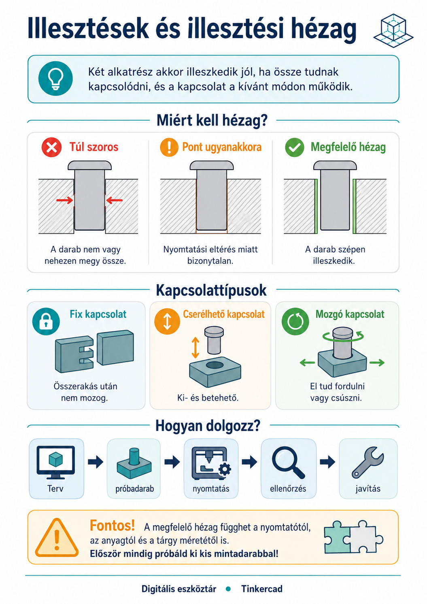
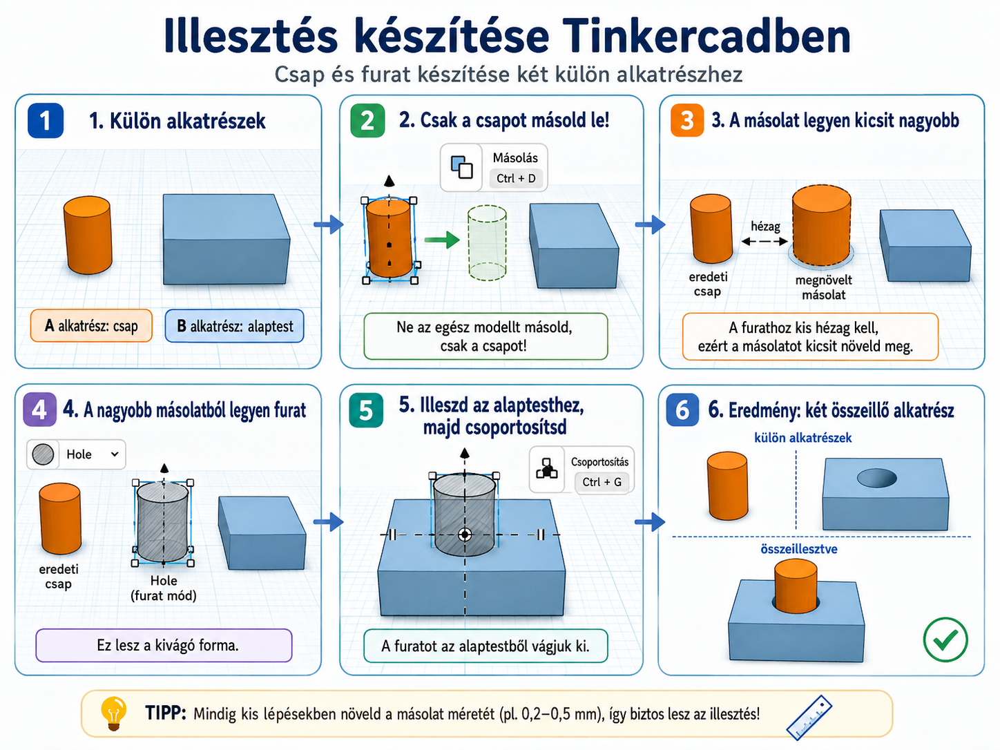

Ha két külön kinyomtatott résznek egymásba, egymásra vagy egymás köré kell illeszkednie, a pontos méret önmagában nem elég. Meg kell tervezned azt a kis helyet is, amely lehetővé teszi az összerakást és – ha szükséges – a mozgást.
🧩
⏱️ 5–8 perc🎯 Egymáshoz kapcsolódó alkatrészek📏 Pontos méretezés
A legfontosabb szabályHa egy 10 mm-es csapot pontosan 10 mm-es furatba tervezel, attól még nem biztos, hogy a kinyomtatott darabok összeilleszthetők. A valós alkatrészekhez általában kis illesztési hézag szükséges.

Az illesztésnél nemcsak a méret számít: azt is meg kell tervezni, milyen kapcsolatot szeretnél, és mekkora hely szükséges a működéshez.
1. Mi az illesztés?
Illesztésről akkor beszélünk, amikor két külön alkatrészt úgy tervezel meg, hogy a valóságban kapcsolódjanak egymáshoz.
⭕Csap és furatEgy kiálló rész belekerül egy nyílásba.
↔️Becsúszó elemEgy alkatrész egy horonyba vagy vezetékbe csúszik.
🔄Tengely és lyukAz egyik résznek a másikban el kell tudnia fordulni.
🧢Ráillesztett elemEgy alkatrész rákerül vagy ráhúzható egy másikra.
2. Miért nem jó a „pont ugyanakkora”?
A 3D nyomtató nem matematikai pontosságú másológép. A kinyomtatott méretet több dolog is befolyásolhatja: a gép pontossága, az anyag, a rétegvastagság és a nyomtatási beállítások.
⚠️ Képernyőn tökéletes ≠ valóságban összeillik
Ha a csap és a furat névleg pontosan ugyanakkora, a nyomtatás apró eltérései miatt könnyen előfordulhat, hogy a két alkatrész túl szoros lesz, vagy egyáltalán nem lehet összerakni.
Ezért a kapcsolódó alkatrészek között általában hagyunk egy kis helyet. Ezt nevezzük illesztési hézagnak.
3. Szoros, laza vagy mozgó legyen?
Nem minden kapcsolatnak ugyanúgy kell működnie. Először azt döntsd el, mit vársz tőle!
🔒 Fix kapcsolatÖsszeillesztés után nem akarod mozgatni. Itt kisebb hézag is elegendő lehet.
🧩 Kivehető vagy cserélhető részKi kell tudni venni és vissza kell tudni tenni. Nem szorulhat be.
🔄 Mozgó kapcsolatForgás vagy csúszás közben is maradjon szabad hely a két felület között.
Nincs egyetlen univerzális hézagértékA jó érték függ a nyomtatótól, az anyagtól, a mérettől és attól is, hogy fix vagy mozgó kapcsolatot szeretnél. Ha a feladat konkrét értéket ad meg, azt használd! Máskor próbadarabbal érdemes beállítani.
4. Hogyan tervezz illesztést Tinkercadben?
1
Mérd meg a kapcsolódó alkatrészt!Ne szemre dolgozz! A fontos méreteket milliméterben add meg.
2
Döntsd el, hogyan kell működnie!Fixen kapcsolódjon, kivehető legyen, csússzon vagy forogjon?
3
Tervezd bele a hézagot!A befogadó részt készítsd kissé nagyobbra, vagy a belekerülő részt kissé kisebbre. A lényeg: ne ugyanaz legyen a két névleges méret.
4
Igazítsd pontosan a két elemet!Használd az igazítást és több nézetet, hogy a csap, furat vagy horony valóban egy tengelyre kerüljön.
5
Próbáld ki valódi nyomtatással!Az első nyomtatás egyben teszt is. Ha túl szoros vagy túl laza, térj vissza a Tinkercad-tervhez és módosíts!

Csap–furat illesztés készítése: csak a csapot másold le, a másolatból készíts kissé nagyobb kivágó formát, majd ezt igazítsd és csoportosítsd az alaptesttel!
Tegyük fel, hogy egy henger alakú csapot szeretnél egy kör alakú furatba tenni.
🧠 Ne ezt kérdezd: „Mekkora a csap?”
Hanem ezt:
„Mekkora a csap, milyen kapcsolatot szeretnék, és mekkora helyet kell hagynom körülötte ahhoz, hogy a valóságban is működjön?”
A két alkatrész méretei tehát összetartoznak. Ha az egyiken változtatsz, ellenőrizd a másikat is!
6. A próbadarab nem kudarc, hanem mérés
Ha az illesztés fontos, sokszor nem érdemes rögtön az egész tárgyat újranyomtatni. Készíthetsz egy kis próbadarabot ugyanazzal a csappal, furattal vagy horonnyal.
6
Nyomtass kis tesztet!Csak az illesztéshez szükséges részt készítsd el.
7
Próbáld össze!Túl szoros? Kiesik? Akad? Nem forog?
8
Módosíts és tesztelj újra!A jó illesztés gyakran egy rövid tervezés–próba–javítás folyamat eredménye.
🔁 Ez is tervezési folyamat
TERV → NYOMTATOTT PRÓBA → ELLENŐRZÉS → JAVÍTÁS → ÚJ PRÓBA
Az első változatnak nem kell tökéletesen illeszkednie. Az a fontos, hogy észrevedd, mi a probléma, és a szerkeszthető modellben tudatosan javíts rajta.